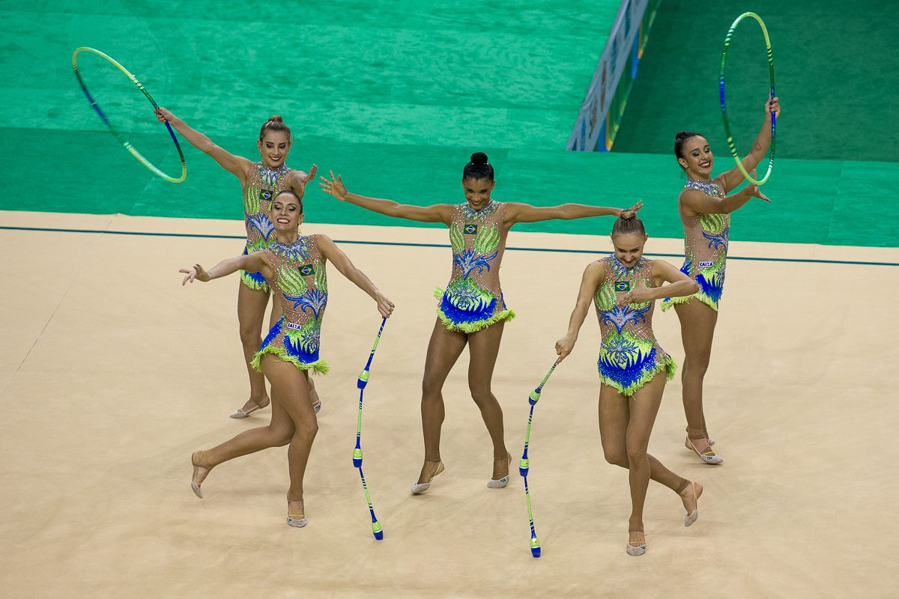

시즌 49승 1패, 안세영의 훈련법이 달랐다
배드민턴 여자 단식 세계 1위 안세영이 올 시즌 49승 1패라는 기록을 이어가고 있다. 진천선수촌 훈련 공개에서 드러난 것은 특별한 비법이 아니라, 반복 구간을 끝까지 채우는 방식이었다.
유선경 기자 · 2026.09.12
橋경제·문화·스포츠

배드민턴 여자 단식 세계 랭킹 1위 안세영이 올 시즌 49승 1패의 기록을 이어가고 있다. 국제 대회 성적이 누적되면서 랭킹 격차도 벌어진 상태다.
광고 문의 · 300×250충북 진천선수촌에서 공개된 훈련 현장에서 눈에 띈 것은 특별한 장비나 새로운 기술이 아니었다. 같은 동작을 정해진 횟수만큼, 마지막 한 개까지 채우는 방식이었다.
체력이 기술을 지탱한다
배드민턴 단식은 랠리가 길어질수록 하체 부담이 커지는 종목이다. 경기 후반에 스텝이 반 박자 늦어지면 같은 기술도 통하지 않는다.
훈련의 상당 부분이 코트 위 방향 전환과 착지 안정에 배분되는 이유다. 부상 이력이 있는 선수일수록 착지 훈련의 비중이 커진다.
기록을 읽는 법
49승 1패라는 기록은 압도적으로 보이지만, 배드민턴은 한 대회에서 여러 경기를 치르는 구조여서 승수 자체가 빠르게 쌓인다. 중요한 것은 패배가 어느 단계에서 나왔는가다.
결승 이전 라운드에서 이변이 거의 없었다는 점이 이 기록의 실질적인 의미다. 세계 1위가 초반 라운드에서 흔들리지 않는다는 것은 컨디션 관리가 일정하게 유지되고 있다는 뜻이기도 하다.
다음 목표는 시즌 후반 주요 대회다. 대표팀은 일정 조율과 회복 관리를 병행하고 있다고 밝혔다.
출처·참고 (사실 확인용 — 본문은 직접 재작성)
· https://www.chosun.com/sports/
· https://www.chosun.com/sports/